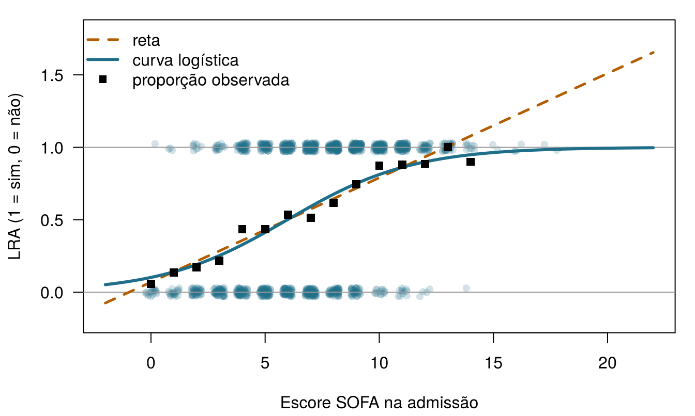
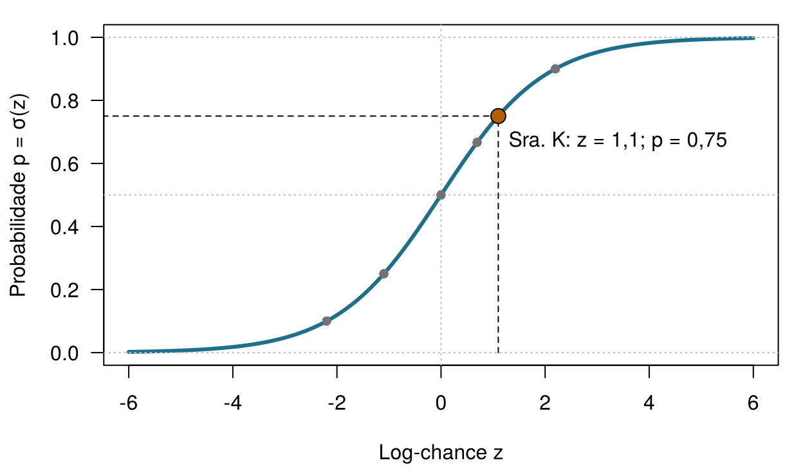
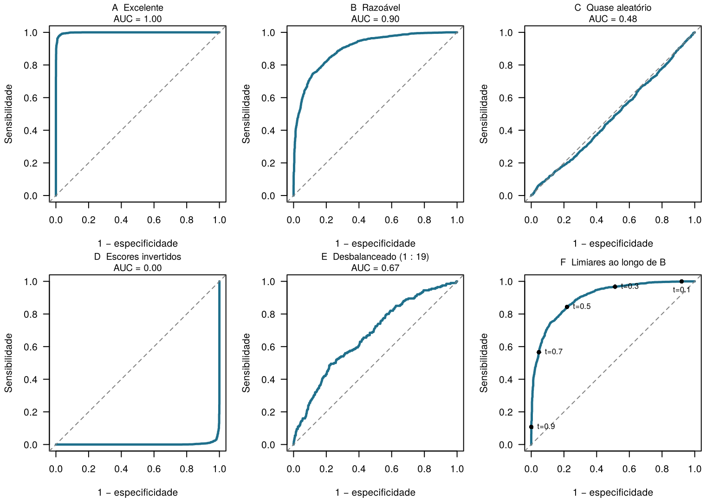
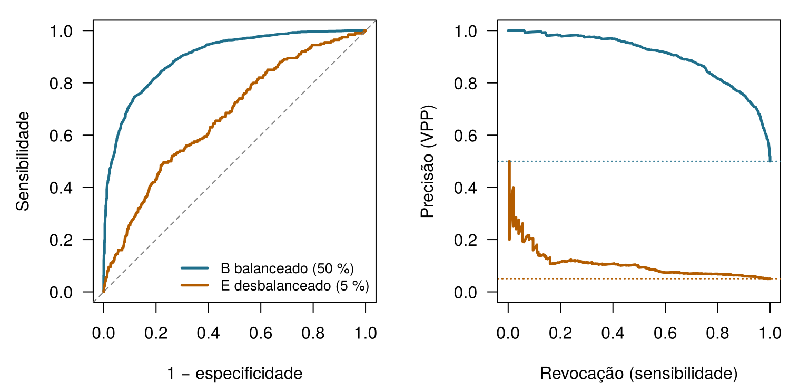
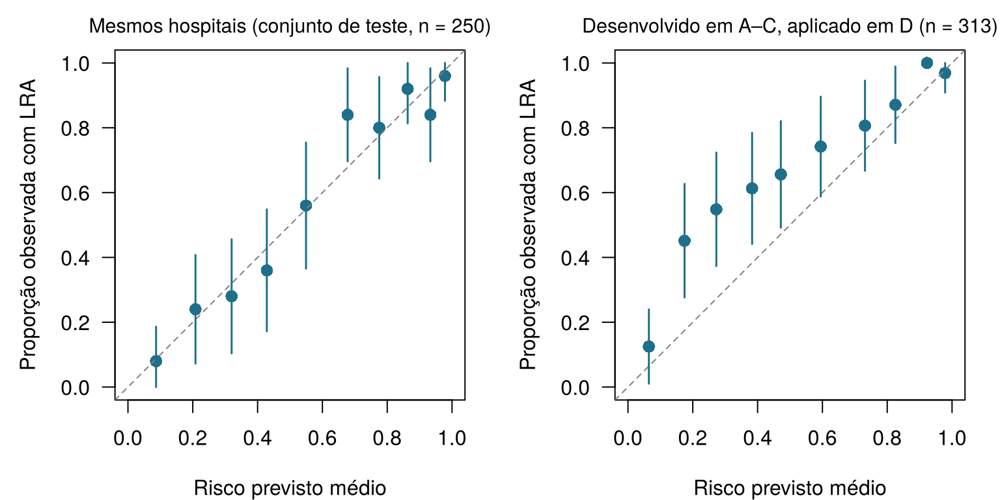

5 Classificação, limiares e calibração
Quatro perguntas para aquecer. Arrisque seu melhor palpite: todas são respondidas no capítulo.
| Pergunta | Sua resposta |
|---|---|
| Uma probabilidade de 0,75 corresponde a uma chance (odds) de … (digite um número) | |
| Uma chance de 1 ("meio a meio") corresponde a uma probabilidade de … (digite um número) | |
| O alerta dispara quando o risco previsto fica acima de um limiar. Quem deveria escolher o limiar? | |
| Um modelo atribui 30 % a um grupo de 100 pacientes. Ele está bem calibrado se … |
Como usar este capítulo
Começando por aqui?
Este capítulo toma emprestadas algumas ideias de capítulos anteriores. Em resumo:
- Limiar de decisão (Seção 1.5). No Capítulo 1, a equipe da UTI Ala 7 comparou o valor esperado de iniciar um pacote de proteção renal com o do cuidado padrão. Com as pontuações dela, o pacote era a melhor escolha sempre que a probabilidade de LRA passava de 0,25: o limiar.
- Conjuntos de treino e de teste (Seção 1.8, Definição 1.9). Um modelo é avaliado em pacientes que não foram usados para construí-lo; as escolhas feitas durante a construção são avaliadas por validação cruzada. O Capítulo 3 transforma isso em rotina e alerta para o vazamento de informação: informação sobre o desfecho que se infiltra nos preditores.
- Sensibilidade, especificidade, VPP e VPN (Capítulo 2). Em um teste do tipo sim/não, a sensibilidade é a proporção de pessoas com a condição que testam positivo, a especificidade é a proporção das pessoas sem a condição que testam negativo, e o valor preditivo positivo (negativo) é a proporção de resultados positivos (negativos) corretos. Os valores preditivos dependem da prevalência; a sensibilidade e a especificidade, não.
- Verossimilhança e perda esperada (Capítulo 2). A verossimilhança mede o quão prováveis são os dados observados sob determinados valores dos parâmetros; a máxima verossimilhança escolhe os valores que tornam os dados mais prováveis. A perda esperada pondera cada erro possível pela sua probabilidade.
- Regressão linear, coeficientes, ridge e lasso (Capítulo 4). Um modelo linear prevê \(\hat y = \beta_0 + \beta_1 x_1 + \dots + \beta_p x_p\); as penalidades encolhem os coeficientes para combater o sobreajuste.
| Exemplo | Quem ou o quê | Desfecho | Rostos que você vai conhecer |
|---|---|---|---|
| 1 UTI Ala 7 | 1.250 pacientes de UTI em 4 hospitais | variação da creatinina em 48 h (lesão renal aguda se ≥ 0,3 mg/dL) | Aoife (71 anos, sepse, risco limítrofe), Tomás (54 anos, risco baixo), Priya (38 anos, risco alto); a Dra. Emma Walsh; Seán, o farmacêutico |
| 2 Ensaio ONCO-1 | 1.000 pacientes randomizados para quimioterapia ou não | redução do tumor (%) | pacientes #0042 e #0917 |
| 3 HomeBeat | 500 pessoas que usam um relógio inteligente em casa | escore de estresse, evento de deterioração | Lena |
| 4 CellWorks | 420 lotes de produção de uma terapia celular | escore de potência | lote CW-118 |
Os quatro conjuntos de dados são simulados e podem ser baixados no apêndice de dados. A apresentação completa está na Seção 1.1.
Este capítulo transforma a saída de um modelo em uma decisão. Você vai conhecer o modelo logístico, a linguagem das chances e as ferramentas para avaliar um classificador: a matriz de confusão, as curvas ROC e de precisão–revocação, a calibração e as curvas de decisão. Ele tem treze seções e um Lab, sete verificações rápidas, três widgets “Experimente”, um desafio e três missões de programação em R e Python. Reserve cerca de duas horas.
Notação em resumo (apenas para consulta)
| Símbolo | Significado | Seção |
|---|---|---|
| \(p\), \(\hat p\) | probabilidade do evento (aqui, LRA) e sua estimativa por um modelo | Seção 5.2 |
| \(z\) | preditor linear \(\beta_0 + \beta_1 x_1 + \dots + \beta_p x_p\), na escala da log-chance | Seção 5.3 |
| \(\sigma(z)\) | função logística (sigmoide) \(1/(1+e^{-z})\) | Seção 5.3 |
| \(\beta_j\), \(e^{\beta_j}\) | coeficiente do atributo \(j\) e sua razão de chances | Seção 5.4 |
| \(t\) | limiar de classificação | Seção 5.6 |
| TP, FP, FN, TN | verdadeiros positivos, falsos positivos, falsos negativos, verdadeiros negativos | Seção 5.6 |
| \(C_{\text{FP}}\), \(C_{\text{FN}}\) | dano de um falso positivo, de um falso negativo | Seção 5.9 |
| NB\((t)\) | benefício líquido (net benefit) no limiar \(t\) | Seção 5.11 |
Neste capítulo, \(p\) é uma probabilidade. Em outras partes do livro, \(p\) também conta atributos; o contexto sempre deixa claro qual é o sentido. A lista completa está na página de notação.
5.1 De números a sim ou não
Nos Capítulos 1 e 4, o desfecho da UTI Ala 7 era um número: a variação da creatinina em 48 horas. Mas Emma não age a partir de um número; ela age a partir de uma pergunta com duas respostas. Aoife vai desenvolver LRA? Pelo critério KDIGO, LRA significa um aumento de pelo menos 0,3 mg/dL em 48 horas (Kidney Disease: Improving Global Outcomes (KDIGO) Acute Kidney Injury Work Group 2012), então podemos transformar o prontuário de cada paciente anterior em um desfecho binário: \(y_i = 1\) se o paciente \(i\) desenvolveu LRA e \(y_i = 0\) caso contrário. Dos 1.250 pacientes anteriores, 58 % desenvolveram.
Prever uma categoria em vez de um número se chama classificação. Um classificador pode devolver um rótulo (“LRA” ou “sem LRA”), mas os úteis devolvem uma probabilidade, \(\hat p\), e deixam o rótulo para uma etapa posterior. Este capítulo trata das duas etapas: como estimar \(\hat p\) e como transformá-la em uma decisão.
Por que não usar simplesmente a regressão linear do Capítulo 4, com \(y\) codificado como 0 e 1? Isso se chama modelo de probabilidade linear, e a Figura 5.1 mostra o problema dele. A reta ajustada à LRA (0/1) em função do SOFA prevê tranquilamente “probabilidades” acima de 1 para os pacientes mais graves: 1,37 com um escore SOFA de 18. Com um atributo que empurrasse o risco no sentido oposto, ela ficaria abaixo de 0 com a mesma tranquilidade. Uma probabilidade não pode sair do intervalo de 0 a 1; precisamos de uma curva que também não possa.
A reta da Figura 5.1 prevê um valor de cerca de 1,5 para um paciente com escore SOFA de 20. Qual é a melhor leitura disso?
5.2 Probabilidade, chance e log-chance
Para construir uma curva que fique entre 0 e 1, fazemos um desvio por uma escala que os apostadores usam há séculos: a chance (em inglês, odds).
Definição 5.1 (Chance e log-chance) A chance (odds) de um evento com probabilidade \(p\) é \(\dfrac{p}{1-p}\): quantas vezes é mais provável que o evento aconteça do que não aconteça. A log-chance (log-odds, ou logito) é o logaritmo natural da chance, \(\operatorname{logit}(p) = \log\dfrac{p}{1-p}\). As probabilidades vivem entre 0 e 1, as chances entre 0 e infinito, e as log-chances em qualquer ponto da reta numérica.
Uma probabilidade de 0,75 significa uma chance de \(0{,}75/0{,}25 = 3\), “três para um”: é três vezes mais provável que o evento aconteça do que não aconteça. Uma chance igual a 1 (meio a meio) corresponde a uma probabilidade de 0,5 e a uma log-chance de 0. A Tabela 5.1 mostra mais alguns valores; repare na simetria da última coluna.
| Probabilidade \(p\) | Chance \(p/(1-p)\) | Por extenso | Log-chance |
|---|---|---|---|
| 0.10 | 0.11 | 1 para 9 | -2.2 |
| 0.25 | 0.33 | 1 para 3 | -1.1 |
| 0.50 | 1.00 | 1 para 1 (meio a meio) | +0.0 |
| 0.67 | 2.00 | 2 para 1 | +0.7 |
| 0.75 | 3.00 | 3 para 1 | +1.1 |
| 0.90 | 9.00 | 9 para 1 | +2.2 |
Por que tanto trabalho? Porque a escala da log-chance não tem paredes. Uma reta pode ir de \(-\infty\) a \(+\infty\) sem jamais produzir um valor impossível, e cada valor de log-chance corresponde a exatamente uma probabilidade entre 0 e 1.
Na UTI Ala 7, 58 % dos pacientes anteriores desenvolveram LRA. Qual é a chance de LRA de um paciente escolhido ao acaso?
5.3 O modelo logístico
A regressão logística coloca a reta do Capítulo 4 na escala da log-chance (Cox 1958; Hosmer, Lemeshow, e Sturdivant 2013):
\[ \log\frac{p}{1-p} \;=\; z \;=\; \beta_0 + \beta_1 x_1 + \beta_2 x_2 + \dots + \beta_p x_p . \qquad(5.1)\]
O lado direito, \(z\), se chama preditor linear. Resolver a Equação 5.1 para \(p\) dá a probabilidade:
\[ p \;=\; \sigma(z) \;=\; \frac{1}{1 + e^{-z}} . \qquad(5.2)\]
Definição 5.2 (Função logística e regressão logística) A função logística (ou sigmoide) \(\sigma(z) = 1/(1+e^{-z})\) transforma qualquer número \(z\) em uma probabilidade entre 0 e 1, seguindo uma curva em forma de S. A regressão logística modela a probabilidade de um desfecho binário como \(p = \sigma(\beta_0 + \beta_1 x_1 + \dots + \beta_p x_p)\): linear na escala da log-chance, em forma de S na escala da probabilidade.
A Figura 5.2 mostra a curva. Pense na Sra. K, de 68 anos, que chega ao pronto-socorro com suspeita de infecção, lactato de 5,2 mmol/L e sistema imunológico enfraquecido. Suponha que um modelo de sepse some os atributos dela em um preditor linear \(z = +1{,}1\). Então \(p = 1/(1+e^{-1{,}1}) = 0,75\). O modelo está dizendo que, entre muitos pacientes como a Sra. K, cerca de três em cada quatro desenvolvem sepse. É uma probabilidade, não um diagnóstico: a própria Sra. K vai ou não vai desenvolver sepse, e o que fazer diante de um risco de 75 % é outra questão, o tema da Seção 5.9.

Como os coeficientes \(\beta\) são encontrados? Não por mínimos quadrados. A regressão logística usa a máxima verossimilhança (veja o Capítulo 2): entre todos os valores possíveis de \(\beta\), ela escolhe os que tornam mais prováveis os desfechos que realmente observamos. Para um paciente que desenvolveu LRA, o modelo deve dar um \(\hat p_i\) alto; para um que não desenvolveu, um \(1-\hat p_i\) alto. Maximizar a verossimilhança é o mesmo que minimizar a perda logarítmica (log-loss), a surpresa média do modelo diante do que realmente aconteceu:
\[ \text{log-loss} = -\frac{1}{n}\sum_{i=1}^{n}\Big[\,y_i \log \hat p_i + (1-y_i)\log(1-\hat p_i)\Big]. \qquad(5.3)\]
Um modelo que diz 0,99 para um paciente que depois não desenvolve LRA paga um preço alto, \(-\log(0{,}01) \approx 4{,}6\); um que diz 0,6 para um paciente que desenvolve paga apenas \(-\log(0{,}6) \approx 0{,}5\). Esta é a etapa de “corrigir” do ciclo de aprendizado do Capítulo 1 (chutar, corrigir, ajustar, repetir): o erro quadrático corrige um palpite sobre um número; a log-loss corrige um palpite sobre sim ou não. Ao contrário dos mínimos quadrados, não existe uma fórmula que dê o melhor \(\beta\) em um único passo; o computador os ajusta iterativamente até a log-loss parar de cair (Hastie, Tibshirani, e Friedman 2009, cap. 4). Você pode fazer isso à mão.
Ajuste a curva em S à mão. Os pontos são os 1.250 pacientes da UTI Ala 7 (LRA = 1 em cima, sem LRA = 0 embaixo) e os quadrados mostram a proporção observada com LRA em cada escore SOFA. Seu modelo é \(\hat p = \sigma(\beta_0 + \beta_1 \times \text{SOFA})\). Mova os controles deslizantes e observe a log-loss. Um modelo que ignora o SOFA e dá a todos o risco médio tem uma log-loss de cerca de 0,68. Meta: levar a log-loss abaixo de 0,58.
A melhor curva que você consegue encontrar só com o SOFA tem uma log-loss de cerca de 0,57, e sua inclinação é positiva: cada ponto a mais de SOFA aumenta a log-chance de LRA. Com mais atributos, o computador faz a mesma busca em muitas dimensões ao mesmo tempo.
A regressão logística também pode ser desenhada como uma pequena rede (Figura 5.3): cada atributo é multiplicado por um peso, os produtos são somados a uma constante e a soma passa pela sigmoide. Isso é exatamente um único neurônio artificial. No Capítulo 7 empilhamos muitos deles para construir redes neurais e, quando há mais de duas classes (normal, pneumonia, tuberculose), a sigmoide é substituída pela sua generalização para muitas classes, a softmax, que devolve uma probabilidade por classe (Goodfellow, Bengio, e Courville 2016, cap. 6). A mesma softmax escolhe a próxima palavra nos modelos de linguagem da Parte V.
flowchart LR
x1["x₁ (SOFA)"] --> w1["× β₁"]
x2["x₂ (lactato)"] --> w2["× β₂"]
xp["xₚ (…)"] --> wp["× βₚ"]
w1 --> SUM
w2 --> SUM
wp --> SUM
SUM["z = β₀ + Σ βⱼxⱼ"] --> ACT["σ(z)"]
ACT --> y["p̂ = probabilidade de LRA"]
5.4 Lendo um modelo ajustado: razões de chances
Antes de ajustar o modelo da UTI Ala 7, um pequeno exemplo resolvido mostra como ler os coeficientes logísticos. Suponha que, entre 200 pacientes com suspeita de infecção, 100 estivessem imunossuprimidos e 100 não (Tabela 5.2).
| Sepse | Sem sepse | Risco | Chance | |
|---|---|---|---|---|
| Imunossuprimidos | 30 | 70 | 30/100 = 0,30 | 30/70 = 0,43 |
| Não imunossuprimidos | 12 | 88 | 12/100 = 0,12 | 12/88 = 0,14 |
Definição 5.3 (Razão de chances) A razão de chances (odds ratio, OR) compara a chance de um evento em dois grupos: \(\text{OR} = \text{chance}_1 / \text{chance}_0\). Uma OR acima de 1 significa chance maior no grupo 1; abaixo de 1, chance menor; e exatamente 1, nenhuma diferença. Na regressão logística, \(e^{\beta_j}\) é a razão de chances para um aumento de uma unidade no atributo \(x_j\), mantendo os demais atributos fixos.
Na Tabela 5.2, a razão de chances é \(0{,}43 / 0{,}14 \approx 3{,}1\): a chance de sepse é cerca de três vezes maior nos pacientes imunossuprimidos. Uma regressão logística da sepse em função do estado imunológico devolveria um coeficiente de \(\log 3{,}1 \approx 1{,}13\), e \(e^{1{,}13} \approx 3{,}1\) nos traz de volta. Note que a razão de riscos (a razão entre as probabilidades) é de apenas \(0{,}30/0{,}12 = 2{,}5\). A razão de chances e a razão de riscos só são próximas quando o desfecho é raro; para desfechos comuns, a razão de chances fica mais longe de 1 e não deve ser lida como “três vezes o risco” (Zhang e Yu 1998). A LRA na UTI Ala 7 está longe de ser rara.
Agora, o caso real. A Tabela 5.3 mostra uma regressão logística para LRA ajustada aos 1000 pacientes de treino da UTI Ala 7, com cinco atributos da admissão. Cada razão de chances é apresentada para uma unidade de variação que faz sentido clínico: o tamanho de uma razão de chances depende da unidade, assim como “por grama” e “por quilograma” dão números diferentes para o mesmo medicamento.
| Atributo | Coeficiente β | Unidade | Razão de chances | IC 95 % |
|---|---|---|---|---|
| Escore SOFA | 0.403 | 1 ponto | 1.50 | 1.40 a 1.60 |
| Lactato | 0.297 | 1 mmol/L | 1.35 | 1.14 a 1.59 |
| Menor pressão arterial média | -0.036 | 10 mmHg | 0.70 | 0.60 a 0.82 |
| Creatinina basal | 2.341 | 0,5 mg/dL | 3.22 | 2.55 a 4.07 |
| Adesão ao protocolo | -2.642 | 10 pontos percentuais | 0.77 | 0.70 a 0.85 |
Leia a tabela linha por linha. Cada ponto a mais de SOFA multiplica a chance de LRA por 1,50, mantendo fixos os outros quatro atributos. Uma pressão arterial mínima 10 mmHg mais alta a multiplica por 0,70: melhor perfusão, chance menor. Uma creatinina basal 0,5 mg/dL mais alta a multiplica por 3,22, e 10 pontos percentuais a mais de adesão ao protocolo, por 0,77. Valem dois alertas de capítulos anteriores. Estas são associações: o Capítulo 1 mostrou que o coeficiente da adesão é confundido pela gravidade se a gravidade não estiver no modelo (Seção 1.10). E uma razão de chances multiplica chances, não probabilidades: a mesma OR desloca um risco de 10 % muito menos, em termos absolutos, do que um risco de 50 %.
Aplicado aos pacientes desta noite, o modelo dá os riscos da Tabela 5.4. Eles são próximos dos valores ilustrativos usados no Capítulo 1: Aoife está em cima do muro, Tomás tem risco baixo e Priya, risco muito alto.
| Paciente | Modelo de cinco atributos | Modelo só com SOFA |
|---|---|---|
| Aoife Byrne | 0.49 | 0.50 |
| Tomás Ruiz | 0.07 | 0.25 |
| Priya Nair | 0.99 | 0.90 |
Um modelo de sepse publicado informa, para pacientes vacinados contra a gripe, um coeficiente de −0,36 (razão de chances de 0,70). Qual leitura está correta?
Dos coeficientes às razões de chances. O modelo de LRA de cinco atributos já está ajustado para você (com os 1.000 pacientes de treino da divisão compartilhada, como na Tabela 5.3), como fit em R e model em Python. Os coeficientes estão na escala da log-chance. Preencha a lacuna com a função que os transforma em razões de chances.
A inversa do logaritmo natural é a função exponencial, exp().
round(exp(coef(fit)), 2)A inversa do logaritmo natural é np.exp().
pd.Series(np.round(np.exp(model.coef_[0]), 2), index=features)5.5 Um segundo exemplo: quem responde no ONCO-1?
No ensaio ONCO-1, os pacientes foram randomizados para quimioterapia ou nenhuma quimioterapia, e o tamanho do tumor foi medido antes e depois. Um paciente é um alto respondedor se o tumor diminuiu pelo menos 30 %, uma regra inspirada nos critérios RECIST de resposta parcial (Eisenhauer et al. 2009). A coluna binária high_response registra isso. A Tabela 5.5 mostra o desfecho por braço de tratamento na versão do ensaio usada no navegador.
| Braço | Não altos respondedores | Altos respondedores | Total |
|---|---|---|---|
| Quimioterapia | 104 | 392 | 496 |
| Sem quimioterapia | 502 | 2 | 504 |
Apenas 2 dos 504 pacientes não tratados foram altos respondedores. A razão de chances da quimioterapia é, portanto, enorme, cerca de 950, e uma regressão logística devolve um coeficiente próximo de 6,9 com um intervalo de confiança muito amplo. Não leia isso como “a quimioterapia multiplica a chance de resposta por quase mil”. Quando um grupo quase não tem eventos, os dados chegam perto da separação: um atributo (aqui, o tratamento) prevê o desfecho quase perfeitamente, e a estimativa de máxima verossimilhança deriva rumo ao infinito; com separação perfeita, ela simplesmente não existe (Albert e Anderson 1984). O resumo honesto é “quase ninguém responde sem quimioterapia”, não uma razão de chances precisa. A estimação penalizada (Seção 5.12) ou a verossimilhança com redução de viés de Firth (Firth 1993) dão estimativas finitas e mais sensatas.
A pergunta clinicamente interessante é outra: entre os pacientes que recebem quimioterapia, quem responde? Trata-se de uma decisão sobre quem tratar, ou quem tratar de outra forma. Ajustado aos 412 pacientes com quimioterapia do conjunto de treino compartilhado do livro, com intensidade de dose, grau tumoral, estado funcional (performance status), idade e três genes, o modelo dá as razões de chances da Tabela 5.6. Os genes são medidos em desvios-padrão, então suas razões de chances comparam pacientes separados por um desvio-padrão.
| Atributo | Coeficiente β | Razão de chances |
|---|---|---|
| Intensidade de dose (por 0,1) | 1.23 | 3.4e+00 |
| Grau tumoral G2 vs. G1 | 0.66 | 1.9e+00 |
| Grau tumoral G3 vs. G1 | 2.60 | 1.3e+01 |
| Escore funcional (por ponto; maior = pior) | -1.37 | 2.5e-01 |
| Idade (por 10 anos) | 0.69 | 2.0e+00 |
| gene_01 (por DP) | 3.54 | 3.5e+01 |
| gene_05 (por DP) | -7.47 | 5.7e-04 |
| gene_12 (por DP) | 2.54 | 1.3e+01 |
Dose maior e grau mais alto acompanham uma chance maior de resposta, e um escore funcional pior, uma chance menor; gene_01 e gene_12 aumentam a chance e gene_05 a reduz bastante. Neste ensaio simulado, os pacientes mais velhos respondem um pouco mais vezes. É assim que os dados foram gerados, não uma afirmação clínica, e um lembrete para conferir cada sinal com o que você espera. Repare também no que não está no modelo: os genes 08, 14 e 19. Na simulação, eles são cópias ruidosas da própria redução do tumor, a armadilha do vazamento de informação descrita no Capítulo 3. Um modelo que os usasse pareceria excelente e seria inútil, porque eles só são “conhecidos” depois que a resposta é conhecida.
Os pacientes #0042 e #0917, que conhecemos no Capítulo 4, são dois dos pacientes com quimioterapia do conjunto de teste, portanto o modelo foi ajustado sem eles. No papel eles se parecem: a mesma intensidade de dose (1,07), tumores de grau G1, o mesmo escore funcional (2), idades de 37 e 46 anos. As respostas foram diferentes: o tumor de #0042 encolheu 36,6 % (alta resposta), o de #0917 20,4 % (sem alta resposta). O modelo da Tabela 5.6 dá a eles probabilidades de alta resposta de 0,78 e 0,02: a direção certa, mas um “não” quase certo para um paciente cujo perfil clínico é quase idêntico ao de um respondedor, causado por pequenas diferenças em três genes. O modelo lasso da Seção 5.12, o modelo principal do capítulo para o ONCO-1, é mais cauteloso: 0,75 e 0,18. Como no caso de Aoife, o modelo fornece informação. Se ele estivesse disponível antes do tratamento, o que o oncologista e cada paciente teriam feito com uma chance de 18 % de alta resposta, considerando a toxicidade do tratamento e as alternativas, é uma decisão que depende dos valores deles, e dois pacientes que parecem iguais no papel ainda podem responder de forma diferente.
Um colega ajusta uma regressão logística a todo o conjunto de dados do ONCO-1 e relata: “A quimioterapia tem uma razão de chances de cerca de 950 (IC 95 % de cerca de 230 a 3.900).” Qual é o principal problema?
5.6 Da probabilidade à decisão: a matriz de confusão
O modelo dá a Aoife uma probabilidade. O alerta na tela de Emma precisa de um sim ou de um não. A ponte entre os dois é um limiar.
Definição 5.4 (Limiar de classificação) Um limiar de classificação \(t\) transforma uma probabilidade prevista em uma decisão: classificar como positivo (e agir) quando \(\hat p \ge t\), como negativo caso contrário. O limiar não é uma propriedade do modelo: o mesmo modelo pode ser usado com limiares diferentes para finalidades diferentes.
Uma vez fixado o limiar, cada paciente de teste cai em uma de quatro células (Figura 5.4), e a tabela de contagens é a matriz de confusão.
Definição 5.5 (Matriz de confusão, acurácia, precisão, revocação e F1) A matriz de confusão cruza as classes previstas e as reais em verdadeiros positivos (TP, do inglês true positives), falsos positivos (FP), falsos negativos (FN) e verdadeiros negativos (TN). A partir dela: a acurácia \(= (\text{TP}+\text{TN})/n\) é a proporção de classificações corretas; a precisão \(= \text{TP}/(\text{TP}+\text{FP})\) é o valor preditivo positivo; a revocação (recall) \(= \text{TP}/(\text{TP}+\text{FN})\) é a sensibilidade; e o escore F1 \(= 2 \cdot \text{precisão} \cdot \text{revocação} / (\text{precisão} + \text{revocação})\) é a média harmônica das duas (Fawcett 2006; Rijsbergen 1979).
A sensibilidade, a especificidade e os valores preditivos foram apresentados para testes diagnósticos no Capítulo 2; o aprendizado de máquina costuma chamar a sensibilidade de revocação (recall) e o VPP de precisão. Os nomes mudam, as contagens não. A Tabela 5.7 aplica o modelo de cinco atributos aos 250 pacientes de teste da UTI Ala 7, com o limiar de 0,5 do hospital e com o de 0,25 proposto por Seán.
| TP | FP | FN | TN | Sensibilidade | Especificidade | VPP | VPN | Acurácia | F1 | |
|---|---|---|---|---|---|---|---|---|---|---|
| t = 0.50 | 122 | 25 | 25 | 78 | 0.83 | 0.76 | 0.83 | 0.76 | 0.80 | 0.83 |
| t = 0.25 | 140 | 63 | 7 | 40 | 0.95 | 0.39 | 0.69 | 0.85 | 0.72 | 0.80 |
Baixar o limiar de 0,5 para 0,25 captura mais pacientes que acabam desenvolvendo LRA (a sensibilidade sobe de 0,83 para 0,95, e os falsos negativos caem de 25 para 7), ao preço de mais pacotes desnecessários (os falsos positivos sobem de 25 para 63). A acurácia cai de 0,80 para 0,72; ainda assim, para uma equipe que teme mais uma LRA não detectada do que um pacote a mais, 0,25 pode ser a melhor escolha. A acurácia conta todo erro como igualmente ruim, e isso raramente é verdade na medicina. Ela também engana quando uma das classes é rara: se apenas 2 % dos pacientes tivessem um evento, um “modelo” que nunca sinaliza ninguém teria 98 % de acurácia e seria inútil.
5.7 Curvas ROC e AUC
Cada limiar dá uma matriz de confusão, uma sensibilidade e uma especificidade. Deslizar \(t\) de 1 até 0 traça uma curva.
Definição 5.6 (Curva ROC e AUC) A curva ROC (receiver operating characteristic, característica de operação do receptor) representa a sensibilidade (taxa de verdadeiros positivos) contra \(1-\)especificidade (taxa de falsos positivos) para cada limiar possível. A área sob a curva ROC (AUC) a resume em um único número: a probabilidade de que um paciente com o evento, escolhido ao acaso, receba um risco previsto maior do que um paciente sem o evento, também escolhido ao acaso. Uma AUC de 0,5 não é melhor do que uma moeda; 1 é uma ordenação perfeita.
Vale a pena lembrar a leitura probabilística da AUC, devida a Hanley e McNeil (1982): ela diz que a AUC mede a discriminação, o quão bem o modelo ordena os pacientes, e nada mais. A AUC não depende do limiar e não se importa se as probabilidades previstas estão certas em termos absolutos. Multiplicar todos os riscos por meio deixaria a AUC inalterada.
A Figura 5.5 mostra como são as curvas ROC em seis situações simuladas, sem relação com nossos exemplos recorrentes (Fawcett 2006). Um modelo excelente se cola ao canto superior esquerdo; um razoável se curva acima da diagonal; um modelo que chuta segue a diagonal; um modelo invertido, cujos escores andam no sentido errado, fica abaixo dela (sinal de que algo nos dados ou nos rótulos está trocado: inverter seus escores o tornaria excelente). O quinto painel tem classes muito desbalanceadas, um positivo para cada 19 negativos: sua curva ROC parece respeitável, um ponto ao qual voltamos na Seção 5.8. O último painel marca os limiares ao longo da curva do modelo razoável: baixar \(t\) leva você para cima e para a direita.

Costumam-se citar regras práticas (AUC de 0,7–0,8 “aceitável”, de 0,8–0,9 “excelente”) (Hosmer, Lemeshow, e Sturdivant 2013), mas um número isolado diz pouco. No conjunto de teste da UTI Ala 7, o modelo de cinco atributos tem uma AUC de 0,85. Isso é bom? Depende das alternativas. O modelo só com o SOFA chega a 0,77, e “nenhum modelo” (o mesmo risco para todos) tem uma AUC de exatamente 0,5. Esta é a regra da referência: todo modelo novo deve ser comparado com uma referência simples e com a prática atual, nos mesmos pacientes. Uma AUC de 0,81 relatada sem uma referência não diz nada; uma rede profunda que chega a 0,83 onde a regressão logística chega a 0,82 pode não valer a sua opacidade. Em muitos estudos de predição clínica, os métodos flexíveis de aprendizado de máquina, em média, não superaram uma regressão logística bem construída (Christodoulou et al. 2019).
O modelo de LRA de um fornecedor tem AUC de 0,85 nos dados do seu hospital. Qual afirmação decorre disso?
5.8 Curvas de precisão–revocação quando os positivos são raros
A curva ROC tem um ponto cego. Cada um dos seus dois eixos é calculado dentro de uma classe (sensibilidade entre os pacientes com o evento, taxa de falsos positivos entre os sem o evento), então a curva ROC e a AUC ignoram o quão comum é o evento. Quando o evento é raro, até uma taxa pequena de falsos positivos pode significar muitos falsos positivos em números absolutos, encobrindo os verdadeiros.
Definição 5.7 (Curva de precisão–revocação) A curva de precisão–revocação (PR) representa a precisão (VPP) contra a revocação (sensibilidade) para cada limiar. Um modelo que chuta tem uma curva PR plana na altura da prevalência do evento; a área sob a curva PR costuma ser relatada junto com a AUC quando os positivos são raros.
A Figura 5.6 compara o modelo balanceado razoável (painel B acima) com o desbalanceado (painel E). No gráfico ROC, o modelo desbalanceado parece apenas medíocre; no gráfico PR, a fraqueza dele fica evidente: para capturar metade dos positivos, ele sinaliza muito mais negativos do que positivos, e sua precisão fica pouco acima da prevalência de 5 %. Para desfechos raros, como uma reação adversa rara a um medicamento ou uma doença rara no rastreamento, relate curvas PR além das curvas ROC (Saito e Rehmsmeier 2015). A UTI Ala 7 é o caso oposto: com LRA em mais da metade dos pacientes, as duas curvas contam histórias parecidas.

5.9 O limiar é um julgamento de valor
Um modelo de rastreamento atribui a um paciente uma probabilidade de 0,23 de neoplasia colorretal avançada. Encaminhar para colonoscopia ou não? O modelo não pode responder, porque a resposta depende do quão ruim é cada erro. Um limiar mais baixo detecta mais doença e submete mais pessoas saudáveis a um procedimento invasivo; um mais alto as poupa e deixa passar mais doença. Os programas de rastreamento costumam pender para a sensibilidade, porque um câncer não detectado é muito pior do que uma colonoscopia desnecessária. O ponto de corte é onde os valores clínicos entram no modelo.
O Capítulo 1 já mostrou como tornar isso preciso, e o Capítulo 2 deu a isso o nome de perda esperada. Seja \(C_{\text{FN}}\) o dano de um falso negativo (uma LRA que a equipe não conseguiu prevenir) e \(C_{\text{FP}}\) o dano de um falso positivo (um pacote desnecessário), ambos em relação a uma decisão correta. Para um paciente com risco \(p\), agir tem dano esperado \((1-p)\,C_{\text{FP}}\) e não agir tem dano esperado \(p\,C_{\text{FN}}\). Agir é melhor quando \(p\,C_{\text{FN}} > (1-p)\,C_{\text{FP}}\), isto é, quando \(p\) ultrapassa
\[ t^{*} = \frac{C_{\text{FP}}}{C_{\text{FP}} + C_{\text{FN}}} . \qquad(5.4)\]
Esta é a abordagem do limiar para as decisões clínicas (Pauker e Kassirer 1980). Se uma LRA não detectada é três vezes pior do que um pacote desnecessário, \(t^{*} = 1/(1+3) = 0{,}25\): exatamente o limiar que a equipe da UTI Ala 7 encontrou com o widget de valor esperado da Seção 1.5. Lida de trás para a frente, a equação diz o que um limiar implica: o 0,5 do hospital diz que uma LRA não detectada e um pacote desnecessário são igualmente ruins. Ninguém na UTI Ala 7 acredita nisso. De forma equivalente, a chance no limiar, \(t^{*}/(1-t^{*})\), é igual à razão de danos \(C_{\text{FP}}/C_{\text{FN}}\), uma ligação que voltamos a usar nas curvas de decisão. A Equação 5.4 pressupõe que as probabilidades sejam calibradas; se não forem, o limiar certo para os números do modelo não é o limiar certo para o risco do paciente (Seção 5.10).
Limiar, matriz de confusão, ROC e custos. Os 250 pacientes de teste da UTI Ala 7 recebem escores do modelo de cinco atributos. Mova o limiar e observe a matriz de confusão, o ponto na curva ROC e o dano total. Defina o dano de uma LRA não detectada em relação a um pacote desnecessário (o julgamento de valor da equipe). O dano é contado por 100 pacientes, em unidades de “um pacote desnecessário”. Meta: encontrar um limiar cujo dano fique a menos de 10 % do menor possível, para uma razão de danos diferente de 1.
Com apenas 250 pacientes de teste, o melhor limiar empírico oscila em torno do \(t^{*}\) teórico; com uma razão de danos de 3, ele fica perto de 0,25, como a equação prevê. Repare como a curva de dano é plana perto do mínimo: o limiar exato importa menos do que acertar a ordem de grandeza dele e, portanto, os valores que estão por trás.
Quem define o limiar? O fornecedor que constrói o modelo, o hospital que o compra, o clínico que o usa ou o paciente que arca com as consequências? Um limiar escondido dentro de um software é um julgamento de valor feito em nome de todos, muitas vezes pela pessoa menos afetada por ele. A boa prática é relatar as probabilidades do modelo junto com o desempenho em uma faixa de limiares (Collins et al. 2015), combinar abertamente os limiares locais e, quando possível, permitir que o limiar reflita os valores de cada paciente. O 0,49 de Aoife significa uma coisa para uma equipe que teme a diálise e outra para uma que teme antibióticos em dose insuficiente.
Para cada uso de um modelo de risco, você definiria um limiar relativamente baixo (agir mesmo com risco moderado) ou relativamente alto (agir só quando o risco é grande)?
- Convidar pessoas para um exame de sangue barato e seguro como primeira etapa de um programa de rastreamento de câncer. Limiar baixo
- Recomendar uma cirurgia profilática com complicações graves. Limiar alto
- Iniciar o pacote de proteção renal da UTI Ala 7 quando uma LRA não detectada é considerada muito pior do que um pacote desnecessário. Limiar baixo
- Liberar um lote da CellWorks para infusão sem testes adicionais (o “evento” é o lote ser aprovado). Limiar alto
- Sinalizar participantes do HomeBeat para um telefonema de uma enfermeira, quando a ligação é rápida e bem-vinda. Limiar baixo
- Encaminhar um paciente do ONCO-1 para uma biópsia tumoral extra, um exame invasivo que raramente muda o tratamento. Limiar alto
O limiar de Seán. As predições do modelo de cinco atributos para os 250 pacientes de teste estão carregadas como test (colunas aki e p_model). A equipe considera que uma LRA não detectada é três vezes mais danosa do que um pacote desnecessário. Defina o limiar que decorre da Equação 5.4 e calcule a sensibilidade e a especificidade.
\(t^{*} = C_{\text{FP}}/(C_{\text{FP}} + C_{\text{FN}}) = 1/(1+3)\).
thr <- 0.25\(t^{*} = C_{\text{FP}}/(C_{\text{FP}} + C_{\text{FN}}) = 1/(1+3)\).
thr = 0.255.10 Calibração: dá para confiar no número?
A segunda pergunta de Seán era se “50 %” significa 50 %. A AUC não consegue responder, porque só olha para a ordem das predições. Um modelo pode ordenar os pacientes perfeitamente e ainda assim anunciar riscos sistematicamente altos ou baixos demais.
Definição 5.8 (Calibração) Um modelo é calibrado quando suas probabilidades previstas coincidem com as frequências observadas: entre os pacientes que recebem um risco de cerca de 30 %, cerca de 30 % têm o evento. Um gráfico de calibração agrupa os pacientes pelo risco previsto e representa a proporção observada com o evento contra a predição média de cada grupo; um modelo calibrado fica sobre a diagonal. O intercepto de calibração (ou calibração global, calibration-in-the-large) verifica se as predições são, em média, altas ou baixas demais (ideal: 0); a inclinação de calibração verifica se elas são extremas ou tímidas demais (ideal: 1) (Van Calster et al. 2019).
A calibração já foi chamada de calcanhar de Aquiles da análise preditiva (Van Calster et al. 2019): é relatada muito menos do que a AUC, e no entanto um modelo mal calibrado pode levar a decisões danosas, porque a Equação 5.4 compara o risco previsto com um limiar como se fosse o risco verdadeiro (Steyerberg 2019). Uma medida global simples, que recompensa ao mesmo tempo a discriminação e a calibração, é o escore de Brier, a média dos quadrados das diferenças entre as probabilidades previstas e os desfechos (0 é perfeito) (Brier 1950). No conjunto de teste da UTI Ala 7, o escore de Brier do modelo é 0,149, contra 0,242 quando se dá a todos o risco médio.
A Figura 5.7 mostra dois gráficos de calibração. À esquerda, o modelo é verificado no conjunto de teste aleatório dos mesmos quatro hospitais: os pontos acompanham de perto a diagonal (intercepto de calibração 0,04, inclinação 1,01). À direita, os mesmos cinco atributos foram usados para ajustar um modelo apenas nos hospitais A–C, que depois foi aplicado ao hospital D, onde a LRA é mais comum (68 % em vez de 55 %). A AUC no hospital D continua sendo 0,82, tão boa quanto em casa, mas as predições são sistematicamente baixas demais: em média, 54 % previstos contra 68 % observados (intercepto de calibração 0,90). No hospital D, um paciente apontado como de 20 % está, na verdade, em risco maior, e um limiar escolhido com a Equação 5.4 levaria a subtratamento.

A lição vale de modo geral: a discriminação costuma viajar melhor do que a calibração. O perfil de pacientes, a prática local e a forma de registrar os desfechos deslocam o risco de base entre hospitais e ao longo do tempo. O remédio habitual é a recalibração: manter os coeficientes do modelo, mas reestimar o intercepto (e talvez a inclinação) com dados locais (Steyerberg 2019). A calibração importa muito além da regressão logística. Modelos flexíveis, como árvores com boosting e redes neurais, costumam ser excessivamente confiantes (Niculescu-Mizil e Caruana 2005; Guo et al. 2017), e no Capítulo 18 fazemos a mesma pergunta a um modelo de linguagem que diz estar “90 % seguro”.
Depois que o modelo é levado para o hospital D, sua AUC não muda, mas seu intercepto de calibração é claramente positivo. O que isso significa para Emma, se ela trabalhar no hospital D?
5.11 Curvas de decisão: vale a pena usar o modelo?
Agora temos um modelo que discrimina, um limiar que reflete valores e uma verificação de que as probabilidades merecem confiança. Resta uma pergunta, aquela que um hospital deveria fazer antes de ligar o alerta: agir com base neste modelo faz mais bem do que mal, em comparação com as alternativas simples de tratar todos ou não tratar ninguém? A análise de curvas de decisão responde a ela (Vickers e Elkin 2006; Vickers, Van Calster, e Steyerberg 2016).
Definição 5.9 (Benefício líquido e curva de decisão) No limiar \(t\), o benefício líquido (net benefit) de agir com base em um modelo é \[\text{NB}(t) = \frac{\text{TP}}{n} - \frac{\text{FP}}{n}\cdot\frac{t}{1-t},\] a proporção de verdadeiros positivos menos a proporção de falsos positivos ponderada pela chance no limiar, que (pela Equação 5.4) é igual à razão de danos \(C_{\text{FP}}/C_{\text{FN}}\). Uma curva de decisão representa NB\((t)\) contra \(t\) em uma faixa de limiares razoáveis, para o modelo e para as estratégias “tratar todos” e “não tratar ninguém” (cujo benefício líquido é 0) (Vickers e Elkin 2006).
O benefício líquido é medido em unidades de verdadeiros positivos: um benefício líquido de 0,30 equivale a encontrar 30 casos verdadeiros de LRA por 100 pacientes sem nenhum pacote desnecessário. O peso \(t/(1-t)\) converte os falsos positivos na mesma moeda: em \(t = 0{,}25\), a equipe aceita três pacotes desnecessários para prevenir uma LRA, então cada falso positivo custa um terço de um verdadeiro positivo. “Tratar todos” tem \(\text{TP}/n\) igual à prevalência e \(\text{FP}/n\) igual a um menos a prevalência.
Uma curva de decisão para a UTI Ala 7. Benefício líquido, nos 250 pacientes de teste, do modelo de cinco atributos, do modelo só com o SOFA, de tratar todos e de não tratar ninguém. Escolha a faixa de limiares que sua equipe considera razoável e veja qual estratégia é a melhor.
Três leituras se destacam. Em limiares muito baixos, quando a equipe daria o pacote a quase todo mundo, tratar todos é tão bom quanto o modelo (em \(t = 0{,}10\): 0,548 para o modelo, 0,542 para tratar todos), então o modelo acrescenta pouco: se todos serão tratados de qualquer jeito, uma predição não muda nada. Em torno do limiar de 0,25 da equipe, o modelo é melhor do que tratar todos (0,476 contra 0,451) e melhor do que o modelo só com o SOFA (0,459). E em limiares altos, tratar todos passa a ser danoso (benefício líquido negativo), enquanto o modelo permanece acima de zero. Este é o valor da informação do Capítulo 1 tornado mensurável: um modelo só vale a pena onde pode mudar decisões para melhor.
Em um limiar de 0,25, um modelo tem benefício líquido de 0,40 e “tratar todos” tem 0,38. Qual é o melhor resumo?
Benefício líquido no limiar de Seán. Usando as predições de teste (test), calcule o benefício líquido do modelo em \(t = 0{,}25\) e compare-o com tratar todos. Preencha a lacuna com o peso que converte os falsos positivos em unidades de verdadeiros positivos.
O peso é a chance no limiar, \(t/(1-t)\); no código, o limiar se chama thr. Veja a linha de nb_all.
nb_model <- tp / n - fp / n * (thr / (1 - thr))O peso é a chance no limiar, \(t/(1-t)\); no código, o limiar se chama thr. Veja a linha de nb_all.
nb_model = tp / n - fp / n * (thr / (1 - thr))5.12 Regressão logística penalizada
Quando há muitos atributos e relativamente poucos eventos, uma regressão logística comum sofre sobreajuste, assim como a regressão linear, e a quase separação piora as coisas: alguns coeficientes disparam rumo ao infinito. Os remédios do Capítulo 4 se aplicam sem mudanças. O ridge (uma penalidade L2) encolhe todos os coeficientes em direção a zero; o lasso (L1) pode zerar alguns deles exatamente, selecionando atributos; a rede elástica (elastic net) mistura os dois (Hoerl e Kennard 1970; Tibshirani 1996; Zou e Hastie 2005). A única mudança é que a penalidade é somada à log-loss da Equação 5.3 em vez da soma dos erros quadráticos, e a intensidade \(\lambda\) é escolhida por validação cruzada, por exemplo com glmnet e family = "binomial" (Friedman, Hastie, e Tibshirani 2010).
Voltamos aos pacientes do ONCO-1 tratados com quimioterapia e damos tudo aos modelos: dose, grau, escore funcional, idade e todos os 47 genes do conjunto de dados do navegador, exceto os três que vazam informação: 51 preditores para um conjunto de treino de 412 pacientes, dos quais só cerca de um quinto não são altos respondedores. A Tabela 5.8 compara os modelos nos pacientes de teste mantidos à parte.
| Modelo | AUC | Escore de Brier | Inclinação de calibração | Intercepto de calibração | Coeficientes não nulos |
|---|---|---|---|---|---|
| Prevalência: taxa de alta resposta no treino (sem modelo) | 0,500 | 0,190 | n/d | -0,279 | n/d |
| Regressão logística, 7 preditores escolhidos (dose, grau, desempenho, idade, genes 01/05/12) | 0,987 | 0,038 | 1,037 | 0,327 | 8 |
| Regressão logística (sem penalização), todos os 51 preditores | 0,896 | 0,110 | 0,145 | -4,891 | 52 |
| Regressão logística lasso (λ min) | 0,985 | 0,041 | 1,353 | 0,212 | 27 |
| Regressão logística elastic net (α = 0,5, λ min) | 0,985 | 0,040 | 1,703 | 0,029 | 38 |
| Regressão logística ridge (λ min) | 0,978 | 0,067 | 3,210 | -0,194 | 52 |
O modelo não penalizado com todos os 51 preditores é o pior dos cinco modelos: ele se ajusta ao ruído dos pacientes de treino e paga por isso nos pacientes novos, com a quase separação empurrando as suas predições para 0 ou 1 (inclinação de calibração 0,15, muito abaixo do ideal de 1). O encolhimento o resgata. O lasso mantém 27 dos 52 coeficientes, e seus três maiores coeficientes de genes pertencem a gene_05, gene_01, gene_12: por construção da simulação, os genes que realmente determinam a resposta. O modelo pequeno, com sete preditores escolhidos à mão, se sai tão bem quanto o lasso (AUC 0,987 contra 0,985), mas só porque sabemos como os dados foram gerados; com genes reais, esse conhecimento é exatamente o que falta, e a penalização é uma forma fundamentada de procurá-lo. O Capítulo 6 compara esses genes com o que árvores e florestas encontram, e o Capítulo 12 pergunta se algum desses rankings merece confiança como explicação.
5.12.1 Ward 7: a comparação até aqui
As mesmas penalizações podem ser aplicadas ao modelo de LRA de cinco atributos. A Tabela 5.9 reúne todos os modelos de LRA até aqui, todos ajustados nos mesmos 1.000 pacientes de treino da divisão compartilhada e testados nos mesmos 250 pacientes; a ridge e o lasso usam os mesmos cinco atributos, padronizados nos pacientes de treino, com λ escolhido nas partições compartilhadas. As linhas acrescentadas neste capítulo estão em negrito.
| Capítulo | Modelo | Preditores | Log-loss VC | AUC | Escore de Brier | Inclinação de calibração | Intercepto de calibração |
|---|---|---|---|---|---|---|---|
| 1 | Prevalência: taxa de LRA no treino (sem modelo) | nenhum | 0,683 | 0,500 | 0,242 | n/d | 0,041 |
| 5 | Regressão logística, só o SOFA | SOFA | 0,577 | 0,766 | 0,193 | 1,014 | 0,047 |
| 5 | Regressão logística (sem penalização), o modelo principal | P5 | 0,495 | 0,855 | 0,149 | 1,009 | 0,039 |
| 5 | Regressão logística ridge (λ min) | P5 | 0,499 | 0,855 | 0,152 | 1,246 | 0,039 |
| 5 | Regressão logística lasso (λ min) | P5 | 0,495 | 0,855 | 0,149 | 1,025 | 0,038 |
No Ward 7 as penalizações quase não mudam nada: com 1.000 pacientes e cinco atributos há pouco para encolher. O modelo logístico principal, a ridge e o lasso chegam todos a uma AUC de 0,855, e os seus escores de Brier diferem só na terceira casa decimal (0,149, 0,152 e 0,149), assim como a ridge e o lasso igualaram os mínimos quadrados para a variação da creatinina no Capítulo 4. A ridge puxa as suas predições um pouco para a média, o que aparece na sua inclinação de calibração de 1,25: as suas predições são um pouco tímidas demais. Os três estão muito à frente do modelo só com o SOFA (AUC 0,77, Brier 0,193) e de dar a todos a taxa de LRA do treino (Brier 0,242). Os riscos desta noite também quase não se movem: Aoife recebe 0,50 da ridge e 0,49 do lasso. O Capítulo 6 acrescenta árvores e florestas a esta tabela.
5.13 Onde isto se encaixa no ciclo de decisão
No ciclo de decisão do Capítulo 1, este capítulo é a dobradiça entre informação e decisão. A regressão logística (Seção 5.3) transforma dados em uma probabilidade; as razões de chances (Seção 5.4) mostram como cada atributo a desloca; as curvas ROC e PR (Seção 5.7, Seção 5.8) medem o quão bem ela ordena os pacientes; a calibração (Seção 5.10) verifica se o próprio número merece crédito; o limiar (Seção 5.9) é onde entram os valores de pacientes e clínicos; e a curva de decisão (Seção 5.11) pergunta se a cadeia inteira faz mais bem do que mal. O que pode dar errado? Uma AUC impressionante sem referência; um limiar padrão de 0,5 que, em silêncio, trata todos os erros como iguais; um modelo que ordena bem em um hospital novo, mas cujas probabilidades estão erradas; razões de chances lidas como razões de riscos, ou levadas ao pé da letra sob separação. Quem permanece no controle? Quem define o limiar, e é por isso que ele deve ser definido abertamente, pelas pessoas que convivem com as consequências.
5.14 Lab: do risco à decisão na UTI Ala 7
O Lab reúne em um só lugar as etapas do capítulo para o modelo de LRA da UTI Ala 7, usando R base e, em Python, o scikit-learn (Pedregosa et al. 2011). Execute-o aqui ou baixe-o e execute-o no seu computador: ch05_lab.pt.R · ch05_lab.pt.py.
As duas linguagens usam a divisão treino/teste compartilhada do livro, então concordam até o arredondamento; a versão em Python imprime os resultados sem os gráficos. Duas observações para levar adiante. Primeiro, em \(t = 0{,}25\) Aoife é sinalizada e Tomás não, que é o que os valores da equipe exigem; no 0,5 do hospital, ela fica logo abaixo do alerta. Segundo, a tabela de calibração acompanha, em linhas gerais, a diagonal nos pacientes destes hospitais, mas a Seção 5.10 mostrou que isso pode mudar assim que o modelo muda de lugar.
5.15 Exercícios
- Chances à mão. Converta as probabilidades 0,05, 0,20 e 0,95 em chances e log-chances. Quais pares são simétricos na escala da log-chance?
- Razão de riscos ou razão de chances? Na Tabela 5.2, altere as contagens de modo que apenas 3 de 100 pacientes imunossuprimidos e 1 de 100 dos demais desenvolvam sepse. Calcule a razão de riscos e a razão de chances. Por que agora elas são próximas?
- Unidades. Na Tabela 5.3, qual é a razão de chances para um aumento de 20 mmHg na menor pressão arterial média? E para um aumento de 0,1 mg/dL na creatinina basal?
- Paradoxo da acurácia. Um teste de rastreamento para uma doença rara é aplicado a 10.000 pessoas, 50 das quais têm a doença. Um modelo sinaliza 100 pessoas, 40 delas corretamente. Calcule a acurácia, a sensibilidade, a precisão e o F1, e compare com um “modelo” que não sinaliza ninguém.
- O seu limiar. No widget do limiar, defina o dano de uma LRA não detectada como 1, 3 e 9. Informe \(t^{*}\) em cada caso e quantos dos 250 pacientes de teste receberiam o pacote.
- Calibração. Explique a Emma, em três frases e sem fórmulas, por que um modelo com AUC de 0,82 no hospital D ainda pode levá-la ao subtratamento.
- Curva de decisão. No widget da curva de decisão, encontre a faixa de limiares em que o modelo de cinco atributos supera tanto “tratar todos” quanto “não tratar ninguém”. O que isso significa para uma equipe cujo limiar está fora dessa faixa?
- Código. Modifique o Lab para ajustar o modelo nos hospitais A–C e testá-lo no hospital D. Calcule a AUC, o escore de Brier e a tabela de calibração. Depois recalibre, reajustando apenas o intercepto em metade dos pacientes do hospital D (dica:
glm(aki ~ offset(qlogis(p)), family = binomial)), e verifique a calibração na outra metade.
Respostas selecionadas
1. Chances 0,053, 0,25 e 19; log-chances −2,94, −1,39 e +2,94. As probabilidades 0,05 e 0,95 são simétricas: suas log-chances diferem apenas no sinal.
2. Razão de riscos \(0{,}03/0{,}01 = 3\); razão de chances \((3/97)/(1/99) \approx 3{,}06\). Quando o desfecho é raro, \(1-p \approx 1\), então chances e probabilidades são quase iguais, e o mesmo vale para as suas razões.
3. Para 20 mmHg, a razão de chances é \(e^{20\beta}\): o quadrado da razão de chances para 10 mmHg, cerca de 0,49. Para 0,1 mg/dL de creatinina basal, ela é \(e^{0{,}1\beta} \approx\) 1,26.
4. TP = 40, FP = 60, FN = 10, TN = 9.890. Acurácia 0,993, sensibilidade 0,80, precisão 0,40, F1 ≈ 0,53. Não sinalizar ninguém dá acurácia de 0,995 (maior!), sensibilidade 0 e uma precisão indefinida: a acurácia recompensa ignorar a doença.
6. O modelo continua colocando os pacientes na ordem certa, então os mais graves continuam no topo da lista. Mas no hospital D mais pacientes desenvolvem LRA do que o modelo espera, então todos os números dele são baixos demais. Se Emma tratar apenas os pacientes acima de um ponto de corte fixo, alguns pacientes que precisam do pacote vão ficar abaixo dele.
7. O modelo só é útil onde seu benefício líquido supera as duas estratégias padrão. Uma equipe cujo limiar é muito baixo trataria quase todo mundo de qualquer forma; para ela, o modelo muda poucas decisões e não vale o esforço.
5.16 Resumo
- Um desfecho binário precisa de um modelo cujas predições fiquem entre 0 e 1. A regressão logística é linear na escala da log-chance e tem forma de S na escala da probabilidade, \(p = \sigma(\beta_0 + \beta_1 x_1 + \dots)\); ela é ajustada por máxima verossimilhança (mínima log-loss).
- \(e^{\beta_j}\) é uma razão de chances por unidade de \(x_j\). Seu tamanho depende da unidade; ela se aproxima de uma razão de riscos apenas para desfechos raros; sob (quase) separação, é instável e não deve ser lida ao pé da letra.
- Um limiar transforma uma probabilidade em uma ação e produz uma matriz de confusão. A acurácia trata todos os erros como iguais; sensibilidade, especificidade, precisão e F1 os separam.
- A curva ROC e sua AUC medem a discriminação (ordenação) em todos os limiares; as curvas de precisão–revocação são mais informativas quando os positivos são raros. Compare sempre com uma referência.
- O melhor limiar decorre dos valores: \(t^{*} = C_{\text{FP}}/(C_{\text{FP}}+C_{\text{FN}})\). Um padrão de 0,5 é, ele próprio, um julgamento de valor.
- A calibração pergunta se os riscos previstos coincidem com as frequências observadas. Muitas vezes ela se deteriora quando um modelo vai para um novo contexto, mesmo quando a AUC não se altera; a recalibração pode corrigi-la.
- As curvas de decisão comparam o benefício líquido de agir com base em um modelo com o de tratar todos ou ninguém, ao longo de limiares razoáveis.
- A regressão logística penalizada (ridge, lasso, rede elástica) controla o sobreajuste quando há muitos atributos e poucos eventos.
Onde este capítulo será usado mais adiante
| Ideia deste capítulo | Onde ela reaparece |
|---|---|
| A regressão logística como um único neurônio; a sigmoide | Capítulo 7 (redes neurais) |
| Softmax para muitas classes | Capítulo 7; Capítulo 16 (escolher a próxima palavra) |
| ROC, AUC e calibração como avaliação padrão de classificadores | Capítulos 6, 7 e 8 |
| Probabilidades previstas com incerteza, abster-se perto do limiar | Capítulo 8 (aprendizado bayesiano) |
| Razões de chances são associações, não efeitos | Capítulo 13 (da predição à causalidade) |
| Calibração da confiança declarada por um modelo | Capítulo 18 (modelos de linguagem) |
A seguir: a regressão logística traça fronteiras retas na escala da log-chance. No Capítulo 6, árvores e florestas deixam os dados escolherem fronteiras curvas e com interações, e nós as avaliamos com as ferramentas deste capítulo.
Referências
Albert, A., e J. A. Anderson. 1984. «On the Existence of Maximum Likelihood Estimates in Logistic Regression Models». Biometrika 71 (1): 1–10. https://doi.org/10.1093/biomet/71.1.1.
Brier, Glenn W. 1950. «Verification of Forecasts Expressed in Terms of Probability». Monthly Weather Review 78 (1): 1–3. https://doi.org/10.1175/1520-0493(1950)078<0001:VOFEIT>2.0.CO;2.
Christodoulou, Evangelia, Jie Ma, Gary S. Collins, Ewout W. Steyerberg, Jan Y. Verbakel, e Ben Van Calster. 2019. «A Systematic Review Shows No Performance Benefit of Machine Learning over Logistic Regression for Clinical Prediction Models». Journal of Clinical Epidemiology 110: 12–22. https://doi.org/10.1016/j.jclinepi.2019.02.004.
Collins, Gary S., Johannes B. Reitsma, Douglas G. Altman, e Karel G. M. Moons. 2015. «Transparent Reporting of a Multivariable Prediction Model for Individual Prognosis or Diagnosis (TRIPOD): The TRIPOD Statement». BMJ 350: g7594. https://doi.org/10.1136/bmj.g7594.
Cox, David R. 1958. «The Regression Analysis of Binary Sequences». Journal of the Royal Statistical Society: Series B (Methodological) 20 (2): 215–32. https://doi.org/10.1111/j.2517-6161.1958.tb00292.x.
Eisenhauer, Elizabeth A., Patrick Therasse, Jan Bogaerts, Lawrence H. Schwartz, Daniel Sargent, Rebecca Ford, Janet Dancey, et al. 2009. «New Response Evaluation Criteria in Solid Tumours: Revised RECIST Guideline (Version 1.1)». European Journal of Cancer 45 (2): 228–47. https://doi.org/10.1016/j.ejca.2008.10.026.
Fawcett, Tom. 2006. «An Introduction to ROC Analysis». Pattern Recognition Letters 27 (8): 861–74. https://doi.org/10.1016/j.patrec.2005.10.010.
Firth, David. 1993. «Bias Reduction of Maximum Likelihood Estimates». Biometrika 80 (1): 27–38. https://doi.org/10.1093/biomet/80.1.27.
Friedman, Jerome, Trevor Hastie, e Robert Tibshirani. 2010. «Regularization Paths for Generalized Linear Models via Coordinate Descent». Journal of Statistical Software 33 (1): 1–22. https://doi.org/10.18637/jss.v033.i01.
Goodfellow, Ian, Yoshua Bengio, e Aaron Courville. 2016. Deep Learning. Cambridge, MA: MIT Press. https://www.deeplearningbook.org.
Guo, Chuan, Geoff Pleiss, Yu Sun, e Kilian Q. Weinberger. 2017. «On Calibration of Modern Neural Networks». Em Proceedings of the 34th International Conference on Machine Learning, 70:1321–30. Proceedings of Machine Learning Research.
Hanley, James A., e Barbara J. McNeil. 1982. «The Meaning and Use of the Area under a Receiver Operating Characteristic (ROC) Curve». Radiology 143 (1): 29–36. https://doi.org/10.1148/radiology.143.1.7063747.
Hastie, Trevor, Robert Tibshirani, e Jerome Friedman. 2009. The Elements of Statistical Learning: Data Mining, Inference, and Prediction. 2.ª ed. New York: Springer. https://doi.org/10.1007/978-0-387-84858-7.
Hoerl, Arthur E., e Robert W. Kennard. 1970. «Ridge Regression: Biased Estimation for Nonorthogonal Problems». Technometrics 12 (1): 55–67. https://doi.org/10.1080/00401706.1970.10488634.
Hosmer, David W., Stanley Lemeshow, e Rodney X. Sturdivant. 2013. Applied Logistic Regression. 3.ª ed. Hoboken, NJ: Wiley. https://doi.org/10.1002/9781118548387.
Kidney Disease: Improving Global Outcomes (KDIGO) Acute Kidney Injury Work Group. 2012. «KDIGO Clinical Practice Guideline for Acute Kidney Injury». Kidney International Supplements 2 (1): 1–138.
Niculescu-Mizil, Alexandru, e Rich Caruana. 2005. «Predicting Good Probabilities with Supervised Learning». Em Proceedings of the 22nd International Conference on Machine Learning (ICML ’05), 625–32. ACM. https://doi.org/10.1145/1102351.1102430.
Pauker, Stephen G., e Jerome P. Kassirer. 1980. «The Threshold Approach to Clinical Decision Making». New England Journal of Medicine 302 (20): 1109–17. https://doi.org/10.1056/NEJM198005153022003.
Pedregosa, Fabian, Gaël Varoquaux, Alexandre Gramfort, Vincent Michel, Bertrand Thirion, Olivier Grisel, Mathieu Blondel, et al. 2011. «Scikit-learn: Machine Learning in Python». Journal of Machine Learning Research 12 (85): 2825–30. https://jmlr.org/papers/v12/pedregosa11a.html.
Rijsbergen, C. J. van. 1979. Information Retrieval. 2.ª ed. London: Butterworths.
Saito, Takaya, e Marc Rehmsmeier. 2015. «The Precision-Recall Plot Is More Informative than the ROC Plot When Evaluating Binary Classifiers on Imbalanced Datasets». PLoS ONE 10 (3): e0118432. https://doi.org/10.1371/journal.pone.0118432.
Steyerberg, Ewout W. 2019. Clinical Prediction Models: A Practical Approach to Development, Validation, and Updating. 2.ª ed. Cham: Springer. https://doi.org/10.1007/978-3-030-16399-0.
Tibshirani, Robert. 1996. «Regression Shrinkage and Selection via the Lasso». Journal of the Royal Statistical Society: Series B (Methodological) 58 (1): 267–88. https://doi.org/10.1111/j.2517-6161.1996.tb02080.x.
Van Calster, Ben, David J. McLernon, Maarten van Smeden, Laure Wynants, e Ewout W. Steyerberg. 2019. «Calibration: The Achilles Heel of Predictive Analytics». BMC Medicine 17: 230. https://doi.org/10.1186/s12916-019-1466-7.
Vickers, Andrew J., e Elena B. Elkin. 2006. «Decision Curve Analysis: A Novel Method for Evaluating Prediction Models». Medical Decision Making 26 (6): 565–74. https://doi.org/10.1177/0272989X06295361.
Vickers, Andrew J., Ben Van Calster, e Ewout W. Steyerberg. 2016. «Net Benefit Approaches to the Evaluation of Prediction Models, Molecular Markers, and Diagnostic Tests». BMJ 352: i6. https://doi.org/10.1136/bmj.i6.
Zhang, Jun, e Kai F. Yu. 1998. «What’s the Relative Risk? A Method of Correcting the Odds Ratio in Cohort Studies of Common Outcomes». JAMA 280 (19): 1690–91. https://doi.org/10.1001/jama.280.19.1690.
Zou, Hui, e Trevor Hastie. 2005. «Regularization and Variable Selection via the Elastic Net». Journal of the Royal Statistical Society: Series B (Statistical Methodology) 67 (2): 301–20. https://doi.org/10.1111/j.1467-9868.2005.00503.x.